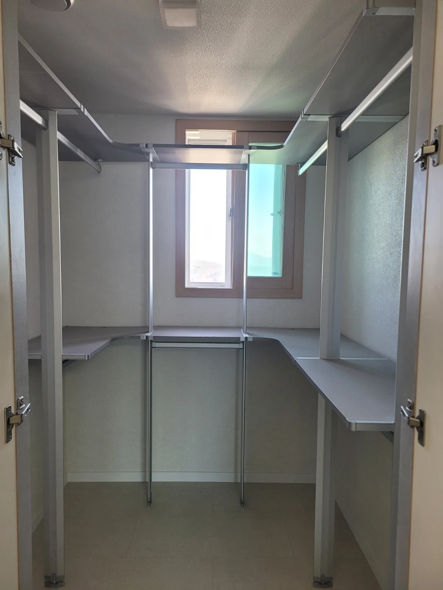

Brand · Livart
리바트 시스템행거
이전설치
새 공간에 맞게 배치를 바꾸는 것까지가 이전설치입니다.
시스템 드레스룸은 선반, 옷봉, 서랍 유닛을 조합해 설치하는 경우가 많아서, 새 공간에서는 조합 순서를 다시 짜야 할 때가 많습니다. 기존에 ㄷ자로 쓰던 구성을 새 방에서는 ㄱ자로, 일자로 쓰던 구성을 두 벽으로 나누는 식입니다.
코니처는 리바트 공식 서비스센터가 아닌 이전설치 전문 업체입니다. 지금 가진 부품으로 새 공간에서 어떤 배치가 가능한지 먼저 살펴보고, 해체부터 재설치까지 진행합니다.

Situations
배치를 바꿔야 하는 경우
ㄷ자를 ㄱ자로
새 방에 쓸 수 있는 벽이 두 면뿐이면 코너 선반을 활용해 ㄱ자로 구성합니다.
일자를 두 벽으로
한 벽이 짧으면 칸을 나눠 마주 보는 두 벽에 설치합니다.
창문이 가운데 있을 때
창 아래는 낮은 선반, 양옆은 옷봉으로 배치를 조정합니다.
서랍 유닛 위치 변경
콘센트나 문 위치에 맞춰 서랍 유닛 자리를 옮깁니다.
Checklist
배치 변경 전에 보는 항목
| 항목 | 지금 공간 | 새 공간에서 확인할 것 |
|---|---|---|
| 설치 형태 | ㄷ자·ㄱ자·일자 | 쓸 수 있는 벽이 몇 면인지 |
| 벽 길이 | 칸 수와 선반 폭 | 칸이 모두 들어가는지 |
| 코너 선반 | 개수 | 새 배치에 코너가 몇 개 필요한지 |
| 서랍·부속 | 위치 | 문·창문과 겹치지 않는지 |
| 천장 높이 | 기존 폴 길이 | 폴 길이가 맞는지 |
Process
배치를 바꾸는 이전 순서
배치 그려 보기
부품 사진과 새 공간 치수로 가능한 배치를 살펴봅니다.
배치 확정
가능한 안을 문자로 설명드리고 함께 정합니다.
해체·분류
칸 단위로 부품을 묶어 새 배치 순서대로 정리합니다.
새 배치로 설치
코너부터 세우고 칸을 이어 붙입니다.
점검
선반 수평과 옷봉 고정을 확인합니다.
FAQ
자주 묻는 질문
부품이 모자라면 배치를 못 바꾸나요?
코너 선반이나 폴이 더 필요한 배치라면 미리 알려드리고, 지금 부품만으로 가능한 다른 배치도 함께 제안합니다.
리바트 제품이 맞는지 모르겠어요
브랜드를 몰라도 괜찮습니다. 설치 사진으로 구조를 보고 이전설치 가능 여부를 판단합니다.
남는 선반은 어떻게 하나요?
새 배치에 쓰지 않는 부품은 칸별로 묶어 전달해 드려서 나중에 다시 쓸 수 있게 합니다.
배치 안은 미리 알 수 있나요?
치수를 받으면 가능한 배치를 문자로 설명해 드립니다.
공식 서비스센터인가요?
아닙니다. 코니처는 브랜드와 관계없이 시스템행거 이전설치를 하는 업체입니다.